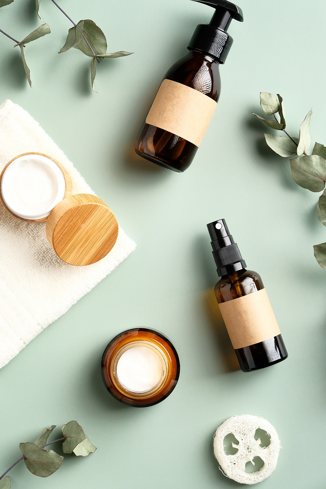

Linha de Produtos
- 
-

Base Líquida
As bases líquidas são produtos de beleza que proporcionam cobertura uniforme e natural à pele, disponíveis em diversas tonalidades para diferentes tipos de pele.
A base líquida oferece diferentes níveis de cobertura, que vão desde leve até alta cobertura. Nossa base tem uma textura fluida que se espalha facilmente sobre a pele, cobrindo imperfeições, manchas e descolorações de forma uniforme.
Para melhor fixação, é recomendável usar um primer antes da aplicação da base líquida e selar com pó translúcido após a aplicação. Isso ajuda a prolongar a durabilidade da maquiagem e manter um acabamento impecável ao longo do dia.
Sombra
A sombra de olhos é um dos produtos essenciais na maquiagem, especialmente para realçar e definir os olhos. Disponível em uma vasta gama de cores, texturas e acabamentos, a sombra de olhos permite uma infinidade de looks, desde os mais sutis até os mais dramáticos e vibrantes..
Podem ser aplicadas de diversas maneiras para criar diferentes efeitos. As sombras mais escuras podem ser usadas para criar profundidade no côncavo, enquanto as mais claras podem iluminar o canto interno dos olhos. Também são ideais para esfumar e misturar cores para um efeito mais suave e natural ou para um olhar mais dramático e definido.
Pó Compacto
O pó compacto é um produto de beleza utilizado para fixar a maquiagem e controlar o brilho da pele, proporcionando um acabamento matte e duradouro.
O pó compacto é especialmente formulado para absorver o excesso de oleosidade da pele e controlar o brilho ao longo do dia. Ele oferece um acabamento matte, deixando a pele com uma aparência suave e sem brilho excessivo.
Assim como outros produtos de maquiagem, o pó compacto está disponível em diversas tonalidades para combinar com diferentes tons de pele. Isso permite escolher o tom mais adequado para um acabamento natural e uniforme.
Batom
O batom é um produto de beleza que proporciona cor e hidratação aos lábios, disponível em diversas texturas e acabamentos para diferentes ocasiões.
Nossos batons são formulados com ingredientes hidratantes, como óleos e manteigas, que ajudam a manter os lábios macios e hidratados. Isso é essencial para evitar ressecamento e descamação, especialmente em climas mais secos.
O batom é muito mais do que um simples cosmético; é uma ferramenta poderosa para expressar personalidade, melhorar a aparência dos lábios e completar um look de maquiagem de maneira elegante e estilosa
Máscara de Cílios
A máscara de cílios é um produto de beleza utilizado para alongar e dar volume aos cílios, proporcionando um olhar mais expressivo e definido.
Para melhores resultados, comece pela raiz dos cílios e mova a escova em direção às pontas. Use movimentos suaves para evitar acumulação excessiva de produto. Para cílios inferiores, é recomendável usar uma escova menor ou até mesmo um pincel específico para precisão.
A máscara de cílios não apenas melhora a aparência dos cílios, mas também realça os olhos, tornando-os o foco central da maquiagem facial. É um produto versátil e indispensável para qualquer kit de maquiagem, permitindo que você alcance cílios deslumbrantes e definidos com facilidade.
Blush
O blush é um produto de beleza utilizado para adicionar cor e luminosidade às maçãs do rosto, proporcionando um aspecto saudável e natural à pele.
O blush também pode ser usado estrategicamente para contornar o rosto e criar dimensão. Tons mais escuros podem ser aplicados nas áreas abaixo das maçãs do rosto para criar sombra, enquanto tons mais claros podem ser usados nas maçãs para realçar e iluminar.